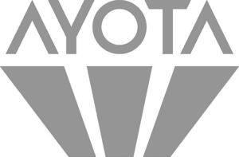

Trade Mark Journal No.2025/013 28 March 2025
WO0000001844564 (9,14,18)
Office of origin: Austria
Date of International Registration:10 April 2024
Date of designation in the UK:
10 April 2024

International priority date claimed: 11 October 2023
(Austria)
- Class 9
- Scientific research and laboratory apparatus, educational apparatus and simulators; apparatus, instruments and cables for electricity; downloadable and recorded content; information technology and audio-visual, multimedia and photographic devices; magnets, magnetizers and demagnetizers; measuring, detecting, monitoring and controlling devices; navigation, guidance, tracking, targeting and map making devices; optical devices, enhancers and correctors; safety, security, protection and signalling devices; diving equipment; electric laboratory apparatus for scientific research; diving equipment; downloadable multimedia files; downloadable emoticons for mobile phones; timetables (electronic -); data recorded electronically from the internet; digital or electronic directories; downloadable digital files authenticated by non-fungible tokens [NFTs]; computer digital maps; data carriers containing stored typographic typefaces; pre-programmed discs; pre-recorded compact discs; pre-recorded compact discs; X-ray plates [exposed] other than for medical use; recorded data files; databases; media content; data sets, recorded or downloadable; databases (electronic); downloadable cryptographic keys for receiving and spending crypto assets; interactive databases; audio books; electronic databases recorded on computer media; electronic publications recorded on computer media; books recorded on tape; series of musical sound recordings; books recorded on disc; typeface fonts recorded on magnetic media; films, exposed; cinematographic film, exposed; exposed slide films; digital books downloadable from the internet; downloadable digital music provided from the Internet; instruction manuals in electronic format; exposed slide films; tape recordings of music; prerecorded music videos; pre-recorded cassettes; pre-recorded DVDs; prerecorded CD-Is; prerecorded CD-ROMs; sensitized films, exposed; sensitized films, exposed; cinematographic film, exposed; sensitized films, exposed; photographic plates [exposed]; photographic film [exposed]; exposed X-ray films, other than for medical use; X-ray films, exposed; films, exposed; exposed photographic slides; electronic publications featuring games; electronic publications in the field of interactive technology; electronic magazines; e-books; e-books; transparencies [photography]; transparencies [photography]; computer documentation in electronic form; downloadable image files; pre-recorded videos; prerecorded videodiscs; pre-recorded videos; pre-recorded video compact discs; recorded tape cassettes; recorded discs bearing images; downloadable digital music; downloadable digital photos; downloadable computer graphics; downloadable comics; downloadable comic strips; downloadable educational media; photographic negatives; photographic media [films, exposed]; transparent films [photographic, exposed] for overhead projectors; electronic magazines; CD-ROMs containing electronic telephone directories; electronic publications, downloadable; electronic publications, downloadable; electronic publications, downloadable, relating to games and gaming; downloadable electronic publications in the nature of magazines in the field of video games; downloadable electronic publications in the nature of magazines; electronic downloadable publications in the field of video games; electronic sheet music, downloadable; downloadable electronic newsletters; downloadable electronic maps; downloadable electronic maps; downloadable electronic books in the field of golf instruction; downloadable electronic brochures; downloadable electronic reports; downloadable digital music provided from MP3 internet web sites; downloadable digital music provided from MP3 internet web sites; downloadable digital music provided from MP3 internet web sites; downloadable printing fonts; downloadable electronic newspapers; electronic publications, downloadable; electronic publications, downloadable; downloadable electronic greeting cards for sending by regular mail; downloadable electronic books; downloadable movies; downloadable series of children's books; downloadable maps; downloadable information relating to games and gaming; downloadable mobile coupons; downloadable graphic novels; downloadable graphics for mobile phones; downloadable graphic design templates; downloadable vaccine administration record forms; downloadable emoticons; electronic publications, downloadable; downloadable publications; downloadable sound recordings; downloadable printable planners and organizers; telephone ring tones [downloadable]; downloadable road maps; printing fonts that can be downloaded provided by means of electronic transmission; downloadable sewing patterns; downloadable postcards; downloadable posters; downloadable podcasts; downloadable musical sound recordings; downloadable media; downloadable educational course materials; downloadable ring tones for mobile phones; reprographic films (sensitised -) [exposed]; downloadable ring tones for mobile phones; cinematographic film, exposed; cinematographic films; cinematographic film, exposed; cinematographic films; interactive electronic publications; interactive DVDs; podcasts; talking books; holographic images; downloadable animated cartoons; downloadable templates for designing audiovisual presentations; downloadable video recordings featuring music; downloadable video recordings; musical sound recordings; multi-media recordings; prerecorded video cassettes featuring cartoons; recorded discs bearing sound; prerecorded motion picture videos; pre-recorded video tapes featuring games; pre-recorded audio tapes featuring games; pre-recorded DVDs featuring games; prerecorded audio tapes featuring music; optical discs featuring music; prerecorded video tapes featuring music; pre-recorded DVDs featuring music; compact discs featuring music; microfilm [exposed]; sensitized films, exposed; audio recordings; audio recordings; audio visual recordings; chips containing musical recordings; instruction manuals in electronic format; training manuals in the form of a computer program; records [sound recordings]; X-ray films, exposed; X-ray photographs, other than for medical purposes; podcasts; photosensitive media [films, exposed]; musical video recordings; musical sound recordings; downloadable music files; musical recordings in the form of discs; downloadable digital music provided from a computer database or the Internet; prerecorded digital audio tapes; prerecorded music compact discs; prerecorded fitness DVDs; prerecorded non-musical audio tapes; video disks with recorded animated cartoons; video films; videocasts; videocasts; video tapes with recorded animated cartoons; pre-recorded videos; video recordings; USB web keys for automatically launching pre-programmed website URLs; USB web keys; records [sound recordings]; animated cartoons in the form of cinematographic films; animated cartoons; weekly publications downloaded in electronic form from the internet; prerecorded exercise DVDs; prerecorded video cassettes featuring music; prerecorded non-musical videotapes; pre-recorded audio tapes; astrometric measuring apparatus and instruments; light detection and ranging [LIDAR] apparatus for vehicles; automatic dosage apparatus; traffic sign recognition systems; safe load indicating apparatus; vehicle speed control apparatus and instruments; traffic sign recognition apparatus and instruments; apparatus and instruments for astronomy; engine diagnostic apparatus; indication panels; safe load indicating apparatus; switchboard indicating lamps; tyre balancing machines for land vehicles; nanoparticle size analysers; fine dust analyzing apparatus; torque transducers; digital indicators; diagnostic apparatus, not for medical purposes; diagnostic apparatus, not for medical purposes; decorative wind socks for indicating wind direction; airborne data acquisition instruments; building management system [BMS]; computer hardware for tracking driver behaviour; computerized vehicle engine analyzers; chromatogram analyzers for scientific or laboratory use; image analyzers; load indicators; automatic altitude indicators; automated drone detection systems; data loggers and recorders; photographic surveying instruments; fluorescence analyzers; borescopes for inspecting work; electro-optic transducers; on-board electronic systems for assisting in maintaining or changing lanes when driving; on-board electronic systems for automatic braking; electronic control instruments; electronic colour analyzers; indication panels; electric power analyzers; electrical phonomotors; electricity indicators; pressure transducers; drone detection systems; rotary encoders; instruments for analysing photographs; air traffic control apparatus; borescopes; high frequency transducers; home automation systems; haptic suits, other than for medical purposes; vehicle speed control systems; apparatus for generating gas for calibration purposes; currency recognition machines; skin moisture analyzers, not for medical purposes; job performance recorders; apparatus for measuring, monitoring and analyzing electricity consumption; air pollution measuring devices; home automation devices; liquid level switches; indication panels; indication panels; mechanisms for counter-operated apparatus; luminescence analyzers; air current testing apparatus; air current measuring apparatus; air analysis apparatus; logic probes; linear transducers; light detection and ranging [LIDAR] apparatus; luminous indicators; force transducers; inspecting apparatus and instruments; wireless controllers to remotely monitor and control the function and status of security systems; wireless controllers to remotely monitor and control the function and status of other electrical, electronic, and mechanical devices or systems; phase indicators; petrochemical analyzers; numerical position indicating apparatus; level switches; neural helmets, not for medical purposes; neon light indicators for use in electrical circuits; food analysis apparatus; engine analyzers; low power microcontrollers; meteorological instruments; transducers; satellite finder meters; luminescence measuring devices; measuring devices; acidity analysers; sunshine recorders; autonomous driving control systems for vehicles; satellite finder meters; X-ray analyzers [other than for medical use]; residual gas analyzers; flue gas analyzers; piezoelectrical transducers; physical analyzers [other than for medical use]; apparatus and instruments for physics; physical analysing apparatus [other than for medical use]; photometric analyzers [other than for medical use]; photo electron spectroscopy analyzers [not for medical purposes]; sensors, detectors and monitoring instruments; testing and quality control devices; monitoring instruments; checking (supervision) apparatus and instruments; load cells; multichannel analyzers; multichannel analyzers; pressure indicator plugs for valves; universal disturbance analyzers; ultrasonic transducers; thermomagnetic cut-out devices; thermosensitive temperature indicator strips; temperature indicator labels, not for medical purposes; stroboscopes; dust measuring apparatus; spectrum analyzers, other than for medical use; controllers and regulators; transducers; transducer energisers; wind pressure gauges; wind socks for indicating wind direction; heat sensing identification indicators; faraday rotator glass; filters for optical devices; infrared filters; inspection mirrors; chains for spectacles and for sunglasses; circle lens; optical filters; optical glass filters; optical condensers; optical beam deflectors; optical lenses; lens blanks; optical glass; infrared optical apparatus; polarization filters; prisms [optics]; prisms [optics]; prisms for optical purposes; make-up goggles; side guards for eyeglasses; stereoscopes; target trackers [telescopic]; interchangeable lenses; target trackers [optical]; target surveillance apparatus [telescopic]; audio/visual and photographic devices; mounting brackets adapted for computers; mounting brackets adapted for computer monitors; analogue to digital converters; analogue to digital converters; analogue convertors; mounting racks for telecommunications hardware; racks for amplifiers; aerial amplifiers; indicator lights for telecommunication apparatus; encryption apparatus; recording apparatus; audio expanders; audio expanders; automatic disc changers; encryption apparatus; data collection apparatus; data collection apparatus; encryption apparatus; data storage devices; attenuators; digital signal processing apparatus; digital voice signal processors; digital amplifiers; digitisers; wireless keyboards; dual amplifier balancers; decoding apparatus; electronic notebooks; electronic agendas; electronic encryption units; electronic amplifiers; electronic dictionaries; electronic interactive whiteboards; electronic agendas; ship's logs [electronic]; electronic encryption units; electronic diaries; electronic digitisers; electronic decoders; electroacoustic amplifiers; electrical amplifiers; ship's logs [electric]; DVD burners; encryption apparatus; decoders; demultiplexers; analogue to digital converters; analogue to digital converters; digital organizers; digital input and output scanners; magnetic encoders; CD drives for computers; imaging devices for scientific purposes; prerecorded data carriers for use with computers; amplifiers; projected capacitive touch sensors; data processing equipment and accessories (electrical and mechanical); data storage devices and media; data storage devices; facial recognition apparatus; recording apparatus; cases for electronic diaries; radio apparatus and instruments; radio-frequency identification (RFID) tags; frequency synthesizers; thin film transistor-liquid crystal display (TFT-LCD) panels; color filters for liquid crystal displays; label readers [decoders]; receiving terminals for signals; amplifier tuners; demagnetizing apparatus for magnetic tapes; magnetic encoders; magnetic encoders; radio-frequency identification (RFID) readers; power amplifiers; credit card encoding machines; telephone credit cards; encoding and decoding apparatus and instruments; keyboard amplifiers; keyboards; wireless keypads; interactive touchscreen terminals; information technology and audiovisual equipment; high-definition multimedia interface dongles; communications equipment; multiport repeaters; multiplexers; multiplexers; multimedia apparatus and instruments; multimedia terminals; multimedia connectors for vehicles; multimedia multiplexers; multifunctional devices which incorporate copier and facsimile functions in the standalone mode; mounting devices for monitors; mounting devices for cameras; multifunction keyboards; multifunction keyboards; multiplexers; masers [microwave amplifiers]; magneto-optical pens; signal limiters; signal expanders; self-synchronizing digital encryptors; security tokens [encryption devices]; acoustic transformers; control units for amplifiers for use in vehicles; pulse code modulating processors; optical enhancers; optical enhancers; optical transmitters; optical transmitters; optical encoders; optical semiconductor amplifiers; optical receivers; photocopiers [photographic, electrostatic, thermic]; keypads for routing audio, video, and digital signals; keyboards; control amplifiers; multiport controllers; speech processors; speech processors; speech processors; speech recognition apparatus; speech recognition apparatus; smart rings; home automation hubs; signal amplifiers; signal compressors; signal decoders; signal cables for IT, AV and telecommunication; distribution amplifiers; amplifiers for vehicles; amplifiers for bass guitars; encryption apparatus; valve amplifiers; ultrahigh frequency translator apparatus; transmultiplexers; carrying cases for cellular phones; wearable monitors; preamplifiers; amplifiers; pickups for telecommunication apparatus; electronic notebooks; telematic terminal apparatus; telematic apparatus; video multiplexers; time data generators; time division multiplexers; time programmers; analytical orthoprojectors; analytical plotters; apparatus and instruments for geolocation; flight controlling apparatus; automated car parking control devices; dashboard mounts for navigation devices; target location apparatus [telescopic]; target seekers [telescopic]; steering apparatus, automatic, for vehicles; autonomous navigation systems for ships; steering apparatus, automatic, for vehicles; marine autopilots; computer hardware for the collection of positioning data; computer hardware for the compilation of positioning data; electric navigational instruments; electric navigational instruments; target location apparatus [electric]; target seekers [electric]; target trackers [electric]; target surveillance apparatus [electric]; electronic tags; gyrocompasses; alidades; computer programs for use in the autonomous navigation of vehicles; computer hardware for the dissemination of positioning data; computer hardware for the processing of positioning data; computer hardware for the transmission of positioning data; electronic global positioning systems; on-board electronic systems in land vehicles for providing driving assistance; on-board electronic systems in land vehicles for providing parking assistance; target surveillance apparatus [electronic]; target sights for guns [electronic]; target trackers [electronic]; target seekers [electronic]; target location apparatus [electronic]; electronic tracking apparatus and instruments; electronic tags for goods; electronic security tags; navigating apparatus (electronic -); electronic navigation systems; electronic navigational and positioning apparatus and instruments; electronic devices used to locate lost articles employing the global positioning system or cellular communication networks; radio buoys; radio beacons; flight controlling apparatus; guidance systems for missiles; flight path controls for projectiles; flight path controls for projectiles; vehicle tracking apparatus; vehicle tracking systems; navigation apparatus for vehicles [on-board computers]; on board electronic systems for providing driving assistance; on board electronic systems for providing parking assistance; driver assistance systems for motor vehicles; target sights for artillery [electronic]; GPS receivers; cases for satellite navigation devices; cosmographic instruments; directional compasses; cartographic apparatus; integrated electronic driver assistance systems for land vehicles; indoor positioning systems [IPS]; infrared gun sighting apparatus; infrared locating apparatus; infrared devices for guiding weapons; global positioning instruments; global positioning instruments; global positioning instruments; electronic control apparatus for guiding tactical missiles; global positioning systems for use with bicycles; global positioning system [GPS] apparatus; car navigation computers; navigational buoys; navigation apparatus and instruments; navigational apparatus for automobiles; nautical apparatus and instruments; needles for surveying compasses; multimedia navigation systems for vehicles; compasses for measuring; marine compasses; magnetic compasses [for surveying]; magnetic compasses for surveying; magnetic compasses; magnetic gyrocompasses; loran navigation machines; radar reflecting apparatus; personnel tracking devices; direction finders; global positioning instruments; position fixing apparatus; target seekers [optical]; target location apparatus [optical]; optical position sensors; octants; directional compasses; navigating apparatus [sextants]; navigational instruments; vehicle navigation systems featuring interactive displays; navigation apparatus for vehicles [on-board computers]; navigating apparatus [compasses]; sensors for determining position; GPS transmitters; marine navigation apparatus; marine compasses; satellite navigational system for bicycles; satellite navigational apparatus; guidance systems for missiles; guidance systems for missiles; guidance systems for missiles; missile launch control apparatus; radar jamming apparatus; radar transmitters; radar reflecting apparatus; radar reflecting apparatus; radar reflecting apparatus; target surveillance apparatus [satellite]; homing heads; target trackers [satellite]; underwater sonar navigational apparatus; inertial navigational instruments; control devices for car audio video navigation; aircraft landing guidance apparatus; car automatic driving control devices; vehicle automatic driving control devices; portable navigation devices; control devices for vehicle navigation apparatus; electronic tags for goods; sextants; compasses for measuring; target sights for artillery [laser]; target sights for guns [laser]; missile trackers; regulators for scuba diving; respiratory apparatus, other than for medical use; buoyancy bladders for diving; weight belts for divers; weight belts for divers; scuba goggles; dive skins; compressed air bailout units for diving; respiratory mask filters [non-medical]; weights; rebreathers for diving; scuba masks; gloves for divers; aqualungs; diving goggles; diving suits; buoyancy compensator devices for divers; divers' life jackets; snorkels for swimming training; snorkels; oxygen regulators; air tanks for use in scuba diving; ear plugs for divers; nose clips for divers and swimmers; divers' nose clips; dry suits; snorkels; diving weights; divers' boots; snorkels; divers' masks; diving helmets; smartbands; smartphones; smartwatches; smart TVs; smart card readers; encoded smart cards; blank smart cards; wearable smartphones; foldable smartphones; cases for smartphones; covers for smartphones; leather cases for smartphones; displays for smartphones; power supplies for smartphones; operating system programs for smartphones; chargers for smartphones; keyboards for smartphones; software for smartphones; programs for smartphones; smartphone screen magnifiers; headphones for smartphones; earphones for smartphones; cameras for smartphones; headsets for smartphones; joysticks adapted for smartphones; flash lamps for smartphones; gimbals for smartphones; docking stations for smartphones; software for smart contracts; blank integrated circuit cards [blank smart cards]; smartphone camera lenses; electronic components for integrated circuit cards; flip covers for smartphones; downloadable application software for smartphones; waterproof cases for smartphones; wireless charging pads for smartphones; expandable screen smartphones; selfie ring lights for smartphones; smartphone game software, downloadable; protective films adapted for smartphones; wireless headsets for smartphones; protective films adapted for smartphone lenses; encoded, magnetic and smart cards; blank electronic chip cards; integrated circuit cards [smart cards]; liquid crystal protective films for smartphones; smartphones in the form of eyewear; smartphones in the shape of a watch; smartwatches that communicate data to smartphones; smart wristbands that communicate data to smartphones; holders adapted for mobile telephones and smartphones; dashboard mats adapted for holding mobile telephones and smartphones; cases for smartphones incorporating a keyboard; internal cooling fans for smartphones; downloadable smartphone software for heart rate monitoring; selfie sticks used as smartphone accessories; software for the planning, integration and optimization of smart city applications; radios incorporating clocks; watchmakers loupes; clock generators for computers; time switches, automatic; time measuring instruments (not including clocks and watches); time and date recording apparatus; smartwatches that communicate data to other electronic devices; smart wristbands that communicate data to other electronic devices; reflecting discs for wear; reflecting discs for wear, for the prevention of traffic accidents; reflective apparel and clothing for the prevention of accidents; reflective articles for wear, for the prevention of accidents; bullet-proof waistcoats; boxing helmets; television decoders; digital set-top boxes; high definition set-top boxes; mouth guards for boxing; connected bracelets [measuring instruments]; wristband computer devices; wearable communications devices in the form of wristwatches; wearable computers; computer software packages; adaptive software; sensory software; assistive software; testware; parental control software; noise cancellation software; authentication software; interactive software; extranet software; software suites; intranet software; server-side software; banking software; biometric software; software testing software; debugging software; social software; production support software; networking software; business software; dashboard software; embedded software; publishing software; antispyware software; application simulation software; supply chain management software; plugin software; collaborative software; data management software; mail server software; proxy server software; communications server software; fire detection software; application server software; file server software; database server software; print server software; media server software; video display software; antivirus software; computer groupware; downloadable software; bioinformatics software; games software; computer programmes for data processing; integrated software packages; software programmable microprocessors; software development kit [SDK]; software reliability software; software for mobile phones; augmented reality software; student software; software for televisions; teacher software; electromechanical software; business technology software; mobile software; computer video game software; downloadable software applications; business intelligence software; downloadable puzzle game software; graphic art software; email software; reservation systems software; risk detection software; character recognition software; blog software; map software; content control software; day trading software; data mining software; content access software; market prediction software; office suites [software]; web server software; collaboration software platforms [software]; development environment software; media streaming software; CAD-CAM software; content management software; traffic management software; closed circuit TV [CCTV] software; cloud server software; computer games of chance; display management software; interactive business software; downloadable calendaring software; software for satellite navigation systems; computer software, recorded; table representation software; desktop publishing software; virtual reality software; computer telephony software; games software; software for card readers; printer spooler software; computer programmes for data processing; software programs for video games; three dimensional picture manipulators; credit screening software; software and applications for mobile devices; computer software packages; software programs for video games; cartridges [software] for use with computers; industrial controls incorporating software; augmented reality software; downloadable email software; instant messaging software; virtual classroom software; unified communications software; magnetic data carriers bearing recorded software; predictive maintenance software; civil engineering software; mechanical engineering software; science software; manufacturing software; electrical engineering software; chemical engineering software; software for online messaging; software for electronic driving assistance systems; document automation software; artificial intelligence software; machine learning software; environmental control software; revision control platforms [software]; software for dynamic tomography apparatus; retail software; workforce management software; operational risk management software; software for search engine optimisation; software for arcade video game machines; software for product development; home automation software; software for X-ray tomography; virtual assistant software; mesh network software; intrusion detection system [IDS] software; geographic information system [GIS] software; search marketing software; virtual server software; motion control software; software for tablet computers; software for GPS navigation systems; internet access software; computer whiteboard software; computer firewall software; digital telephone platforms and software; software for debt recovery; games software; financial management software; graphical user interface software; software for optical character recognition; bios software; tax preparation software; downloadable instant messaging software; software related to handheld digital electronic devices; master of education software; optical data carriers bearing recorded software; computer-aided design (CAD) software; computer-aided manufacturing [CAM] software; software for network and device security; software for facilitating secure credit card transactions; workout logging software; CMS software [content management system]; computer software platforms, recorded or downloadable; database synchronization software; e-payment software; software downloadable from the internet; game development software; hardware testing software; health monitoring software; business performance management [BPM] software; customer relation management [CRM] software; management information system [MIS] software; collaboration management software platforms; business process management [BPM] software; threat detection software; product lifecycle management software; software for virtual reality cinema; virtual reality software for simulation; virtual reality software for education; artificial intelligence software for vehicles; industrial automation software; electronic article surveillance [EAS] software; marketing software relating to third party search; community software; privacy protection software; website development software; software for diagnostics and troubleshooting; gesture recognition software; computer screen saver software, recorded or downloadable; computer software applications, downloadable; control segment integration software; software for conducting general meetings; software for interactive television; data carriers for computers having software recorded thereon; industrial process control software; software programs for video games; intelligent gateways for software defined storage; computer software for computer aided software engineering; downloadable cloud computing software; firmware and software for electronic cigarettes; software for the analysis of business data; software for the processing of business transactions; virtual reality software for medical teaching; virtual reality software for telecommunications; computer-aided engineering [CAE] software; intelligent character recognition [ICR] software; software for the redirection of messages; digital solutions provider [DSP] software; enterprise content management [ECM] software; robotic process automation [RPA] software; virtual and augmented reality software; artificial intelligence software for surveillance; artificial intelligence software for driverless cars; artificial intelligence software for healthcare; machine learning software for analysis; machine learning software for surveillance; building management software; artificial intelligence and machine learning software; software for automated business process discovery (ABPD); software for digital distributed storage; software for greenhouse gas accounting; interactive software based on artificial intelligence; data compression software; computer games programmes downloaded via the internet [software]; personal computers incorporating dietary aid computer software; satellite imagery photo-interpretation software; software for ensuring the security of electronic mail; electronic sports training simulators [computer hardware and software-based teaching apparatus]; computer hardware for use in computer-assisted software engineering; software for mobile device management; on-premise management software; cloud network monitoring software; software for processing digital images; lighting control software for use in commercial and industrial facilities; file sharing software; software for arranging online transactions; software for operating an online shop; hardware reliability software; optical barcode recognition [OBR] software; optical mark recognition [OMR] software; real-time collaborative editing [RTCE] platforms [software]; software for generating virtual images; enterprise resource planning [ERP] software; machine learning software for advertising; machine learning software for finance; machine learning software for healthcare; software for pay per click optimisation; augmented reality software for simulation; augmented reality software for education; artificial intelligence software for analysis; software as a medical device [SaMD], downloadable; computer programs and software for image processing used for mobile phones; programmed video games contained on cartridges [software]; computer software for interpreting fingerprints or palm prints; integrated software packages for use in the automation of laboratories; downloadable software applications for use with three dimensional printers; downloadable applications for use with mobile devices; augmented reality software for creating maps; software for commerce over a global communications network; software for the control of stage lighting apparatus and instruments; software for renting advertising space on websites; communication, networking and social networking software; software for continuous integration and continuous deployment (CI/CD); software for processing images, graphics and text; computer software to maintain and operate computer system; software to control building environmental, access and security systems; software for dosimetry purposes in the field of radiotherapy; software platforms to allow users to collect money; augmented reality software for use in mobile devices; electronic mail and messaging software; software for embedding online advertising on websites; software for evaluating customer behaviour in online shops; software for designing online advertising on websites; data and file management and database software; e-commerce and e-payment software; software converters of natural language into machine executable commands; software for operating and managing integrated circuit components; computer software for use in processing semiconductor wafers; software to control and improve audio equipment sound quality; software for processing images, graphics, audio, video and text; web content management [WCM] software; downloadable software for remotely accessing and controlling a computer; software for the operational management of portable magnetic and electronic cards; software for searching and retrieving information across a computer network; computer software for biometric systems for the identification and authentication of persons; software for monitoring, analysing, controlling and running physical world operations; software for the integration of artificial intelligence and machine learning in the field of big data; electronic device software drivers that allow computer hardware and electronic devices to communicate with each other; augmented reality software for use in mobile devices for integrating electronic data with real world environments; computer software to enhance the audio-visual capabilities of multimedia applications, namely, for the integration of text, audio, graphics, still images and moving pictures; computer networking hardware; scopes for crossbow; dashboard warning lamps; armbands [luminous] for protection against accident or injury; personal digital assistants in the shape of a watch; quantitative polymerase chain reaction [PCR] instruments for scientific use; finger sizers; ring sizers; ring sizers; mobile phone ring holders; mobile phone ring stands; ring buoys for use in water rescue; wearable activity trackers; tablet monitors; tablet computers; stands adapted for tablet computers; flip covers for tablet computers; leather cases for tablet computers; cases for tablet computers; battery chargers for tablet computers; educational tablet applications; protective films for tablets; covers for tablet computers; keyboards for tablets; tablet docking stations; covers for tablet computers; display screen filters adapted for use with tablet computers; bags adapted for tablet computers; wireless headsets for tablet computers; tablet holders adapted for use in cars; notebook computers; laptop computers; sleeves for laptops; bags adapted for laptops; bags adapted for laptops; computers; hybrid laptops; convertible laptops; stands adapted for laptops; battery chargers for laptop computers; laptop covers; cooling pads for laptop computers; laptop docking stations; wireless portable printers for use with laptops and mobile devices.
- Class 14
- Time instruments; jewellery; time instruments; jewellery boxes and watch boxes; key rings and key chains, and charms therefor; gemstones, pearls and precious metals, and imitations thereof; jewellery; statues and figurines, made of or coated with precious or semi-precious metals or stones, or imitations thereof; ornaments, made of or coated with precious or semi-precious metals or stones, or imitations thereof; sew-on tags of precious metal for clothing; gold bullion; decorative boxes made of precious metal; decorative articles [trinkets or jewellery] for personal use; boxes of precious metal; commemorative shields; prayer beads; commemorative coins; commemorative statuary cups made of precious metal; gold bullion coins; gold bullion coins; grave markers of precious metal; alarm clocks; clock cases; pendants for watch chains; anchors [clock- and watchmaking]; wristwatches; watches made of precious metals or coated therewith; watches made of precious metals; watches made of gold; watches made of rolled gold; watches for outdoor use; sports watches; watches containing an electronic game function; watches with the function of wireless communication; watches containing a game function; bracelets for watches; watch bands; chronographs [watches]; chronographs [watches]; chronographs for use as watches; chronographs for use as timepieces; chronometers; chronoscopes; clocks and watches, electric; clocks and watches, electric; electronic alarm clocks; electronically operated movements for watches; electronically operated movements for watches; digital clocks being electronically controlled; clocks and watches, electric; horological articles; apparatus for timing sports events; watch glasses; clocks and parts therefor; parts for clocks; industrial clocks; mantle clocks; watchstraps made of leather; mechanical watch oscillators; mechanical watches with automatic winding; mechanical watches with manual winding; mechanical watches; miniature clocks; watches made of plated gold; buckles for watchstraps; desk clocks; watches for nurses; silver watches; solar watches; sundials; sports watches; parts for clockworks; parts and fittings for horological instruments; parts and fittings for chronometric instruments; table clocks; escapements; watch straps of plastic; watchstraps made of leather; clocks; automobile clocks; clocks for world time zones; clocks incorporating ceramics; horological instruments having quartz movements; clocks and watches; clocks; watch springs; clock cases; pendulums [clock- and watchmaking]; clock dials; watch springs; clock cases; watch glasses; clocks incorporating radios; pocket watches; watch hands; clockworks; chronometers; horological instruments made of gold; chronographs [watches]; control clocks [master clocks]; dials [clock- and watchmaking]; watch dials; dials [clock- and watchmaking]; dials [clock- and watchmaking]; dials [clock- and watchmaking]; cases [fitted] for jewels; fitted jewelry pouches; jewelry rolls for storage; jewel cases of precious metal; cases [fitted] for jewels; cases of precious metals for horological articles; jewel cases of precious metal; cases of precious metals for horological articles; cases of precious metals for horological articles; cases for watches and clocks; boxes for tie-pins; cases [fitted] for clocks; cases [fitted] for jewels; cases [fitted] for clocks; cases [fitted] for horological articles; small jewellery boxes of precious metals; small jewelry boxes, not of precious metal; jewel cases of precious metal; musical jewelry boxes; presentation boxes for gemstones; presentation boxes for jewellery; presentation boxes for gemstones; jewel cases; jewelry boxes of precious metal; jewel cases; cases [fitted] for jewels; jewelry boxes of precious metal; wooden jewellery boxes; leather jewelry boxes; jewelry cases not of precious metal; watch pouches; cases for clock- and watchmaking; watch cases [parts of watches]; watch cases [parts of watches]; clock cases being parts of clocks; stands for clocks; leather key fobs; key fobs of imitation leather; metal key fobs; key fobs of common metal; key fobs, not of metal; lanyards for keys; key rings [trinkets or fobs] of precious metal; imitation leather key rings; key rings of leather; keyrings of common metal; retractable key rings; key rings, not of metal; split rings of precious metal for keys; badges of precious metal; agate as jewellery; amulets [jewellery]; fitted covers for jewelry rings to protect against impact, abrasion, and damage to the ring's band and stones; pendants; pendants; charms [jewellery] of common metals; bracelets; pins [jewellery]; bracelet charms; charity bracelets; bracelets; bracelets of precious metal; bracelets [ornaments] made of rubber or silicone with pattern or message; bracelets made of embroidered textile [jewellery]; hoop earrings; amber pendants being jewellery; jewellery of yellow amber; bridal headpieces in the nature of tiaras; brooches [jewellery]; cabochons; cabochons for making jewellery; decorative brooches [jewellery]; decorative cuff link covers; diadems; diamond jewelry; threads of precious metal [jewellery]; metal badges for wear [precious metal]; enamelled jewellery; eternity rings; collets being parts of jewellery; rings [jewellery]; flexible wire bands for wear as a bracelet; friendship bracelets; friendship rings; square gold chain; gold medals; gold earrings; gold rings; gold jewellery; semi-precious articles of bijouterie; necklaces [jewellery]; paste jewellery; silver rings; silver earrings; silver necklaces; silver bracelets; signet rings; jewelry guard chains; shoe jewellery; shoe jewellery; articles of jewellery coated with precious metals; jewellery with silver embroidery; jewellery with gold embroidery; jewellery in the form of beads; shoe jewellery; 3D wall art made of precious metal; clothing ornaments of precious metals; decorative pins of precious metal; decorative pins of precious metal; commemorative shields of precious metal; model figures [ornaments] coated with precious metal; ornaments of jet; ornamental hat pins; dress ornaments in the nature of jewellery; ornamental figurines made of precious metal; model animals [ornaments] made of precious metal; model animals [ornaments] coated with precious metal; ornamental figurines made of precious metal; ornamental sculptures made of precious metal; adhesive wall decorations of precious metal; scale models [ornaments] of precious metal; clothing ornaments of precious metals; wall decorations of precious metal; action figures (decorative -) of precious metal; ornaments [statues] made of precious metal; busts of precious metal; holiday ornaments [figurines] of precious metal, other than tree ornaments; figurines of precious metal; figures of precious metal; figurines of precious or semi precious stones; figurines of precious metal; figurines of precious stones; figurines made from gold; figurines made of imitation gold; figurines made from silver; figurines for ornamental purposes of precious stones; crucifixes of precious metal, other than jewellery; miniature figurines [coated with precious metal]; figurines coated with precious metal; sculptures of precious metal; statues of precious metal; statues of precious metal; statues of precious metal and their alloys; statues of precious metal of religious icons; statuettes of precious metal and their alloys; figurines made of imitation gold; statuettes made of semi-precious metals; statuettes made of semi-precious stones; desktop statuary made of precious metal; chalcedony; chalcedony; diamonds; diamond [unwrought]; wire thread of precious metal; natural pearls; precious and semi-precious gems; metal wire [precious metal]; precious metals; precious metals, unwrought or semi-wrought; precious metals and their alloys; precious metal alloys [other than for use in dentistry]; precious and semi-precious stones; threads of precious metals; jet, unwrought or semi-wrought; imitation jet; imitation jet; cut diamonds; gold; gold, unwrought or beaten; gold, unwrought or beaten; jet; jet; jades; iridium and its alloys; iridium; imitation pearls; semi-finished articles of precious stones for use in the manufacture of jewellery; semi-finished articles of precious metals for use in the manufacture of jewellery; semi-precious stones; gold alloys; imitation gold; gold thread [jewellery]; gold alloys; gold ingots; gold alloys; osmium and its alloys; osmium; opal; olivine [gems]; olivine [gems]; imitation precious stones; natural pearls; natural gem stones; marcasite jewelry; alloys of precious metal; beads for making jewellery; artificial stones [precious or semi-precious]; cubic zirconia; cubic zirconia; ruby; gold, unwrought or beaten; jet, unwrought or semi-wrought; precious metals, unwrought or semi-wrought; rhodium and its alloys; rhodium; platinum alloys; platinum and its alloys; platinum [metal]; platinum ingots; pearls made of ambroid [pressed amber]; pearl; olivine [gems]; palladium and its alloys; palladium; ruthenium; ruthenium and its alloys; sapphires; sapphires; jewels; silver; silver and its alloys; silver, unwrought or beaten; silver ingots; silver thread [jewellery]; spun silver [silver wire]; emeralds; emeralds; spinel [precious stones]; rhinestones for making jewelry; cultured pearls; processed or semi-processed precious metals; imitation pearls; synthetic precious stones; silver, unwrought or beaten; unwrought silver; sardonyx [unwrought]; agate [unwrought]; unwrought and semi-wrought precious stones and their imitations; unwrought silver alloys; unwrought precious stones; topaz; semi-wrought precious stones and their imitations; semi-worked precious metals; tanzanite being gemstones; gold chains; gold bracelets; facial jewellery; cameos [jewelry]; commemorative medals; ankle bracelets; jewellery findings; necklaces [jewellery]; necklaces of precious metal; gold necklaces; necklace charms; wedding rings; hat jewellery; identification bracelets [jewelry]; identification bracelets [jewelry]; paste jewellery; paste jewellery; jewellery made of precious metals; badges of precious metal; jewellery being articles of precious stones; jade [jewellery]; jewellery fashioned from non-precious metals; jewellery being articles of precious metals; jewellery containing gold; jewellery for personal adornment; jewellery made of bronze; jewellery made of precious metals; gold jewellery; jewellery made of crystal; jewellery made from silver; personal jewellery; jewellery with precious metal embroidery; cameos [jewelry]; chains [jewellery]; chains of precious metals; jewel chains; body jewellery; body-piercing studs; body-piercing rings; crosses [jewellery]; tie clips of precious metal; tie pins; tie chains of precious metal; tie clips; bracelets and watches combined; cuff links; jewellery findings; children's jewelry; chain mesh of semi-precious metals; chain mesh of precious metals [jewellery]; crucifixes as jewellery; bib necklaces; leather rings being jewellery; cuff links; cuff links of precious metal; cuff links made of precious metals with precious stones; cuff links made of precious metals with semi-precious stones; cuff links made of gold; cuff links made of imitation gold; cuff links made of porcelain; cuff links and tie clips; medals; medals made of precious metals; medallions; medallions; platinum rings; amberoid pendants being jewellery; paste jewellery; lapel pins [jewellery]; lapel pins of precious metals [jewellery]; lapel pins of precious metals [jewellery]; lapel pins [jewellery]; lapel badges of precious metal; rings [jewellery]; rings [jewellery]; rings [jewellery]; rings [jewellery] made of precious metal; rings [jewellery] made of non-precious metal; rings [jewellery]; scarf clips being jewelry; jewellery chain of precious metal for necklaces; rope chain made of precious metal; jewellery chain of precious metal for anklets; jewel chains; jewellery rope chain for necklaces; jewellery rope chain for anklets; jewellery rope chain for bracelets; paste jewellery; jewelry clips for adapting pierced earrings to clip-on earrings; jewelry charms in precious metals or coated therewith; trinkets of bronze; jewellery charms; paste jewellery; jewellery for pets; ornaments of precious metal in the nature of jewellery; cases for watches [presentation]; movements for clocks and watches; watch chains; clock hands; fittings for watches; watch chains; watch winders; watch fobs; watch bands; dress watches; small clocks; clocks and watches, electric; digital clocks; bracelets for watches; barrels [clock- and watchmaking]; jewellery charms; clock and watch hands; watch crowns; cases for watches [presentation]; oscillators for clocks; presentation boxes for watches; presentation boxes for watches; presentation boxes for watches; barrels [clock- and watchmaking]; watch chains; parts for clockworks; electronically operated movements for watches; presentation boxes for horological articles; presentation boxes for horological articles; presentation cases for horological articles; watch straps of polyvinyl chloride; watch straps of nylon; metal watch bands; clocks and parts therefor; digital clocks incorporating radios; non-leather watch straps; watch straps of synthetic material; metal expanding watch bracelets; clock cases; cases for clock- and watchmaking; table clocks; clocks and watches for pigeon-fanciers; electronically operated movements for watches; pendant watches; parts for clocks; time clocks [master clocks] for controlling other clocks; watch straps made of metal or leather or plastic; jewelry cases [caskets or boxes]; atomic clocks; silver-plated bracelets; bracelets [jewellery]; bracelets [jewellery]; automatic watches; watches; wooden bead bracelets; watch clasps; wristwatches with pedometers; oscillators for watches; watches bearing insignia; parts for clockworks; gold plated bracelets; wristwatches with GPS apparatus; watches incorporating a telecommunication function; watches incorporating a memory function; plastic bracelets in the nature of jewelry; jewellery chain of precious metal for bracelets; watch winding buttons; digital watches with automatic timers; bracelets; gold plated chains; silver-plated rings; LED finger ring watches; gold plated rings; ring holders of precious metal; jewellery boxes; boxes for cufflinks; jewelry boxes of precious metal; jewellery boxes; jewelry boxes of precious metal; cases for chronometric instruments; cases [fitted] for horological articles; jewelry boxes of precious metal; jewellery boxes; jewelry organizer rolls for travel; jewellery rolls; jewelry boxes not of metal; jewelry boxes, not of precious metal; jewelry boxes of metal; jewellery, including imitation jewellery and plastic jewellery; jewellery fashioned from non-precious metals; jewellery made of semi-precious materials; jewellery made of precious metals; jewellery fashioned of semi-precious stones; personal jewellery; jewelry for the head; paste jewellery; hat jewellery; women's jewelry; jewellery being articles of precious metals; sterling silver jewellery; platinum jewelry; articles of jewellery made of precious metal alloys; jewellery made of precious metals; corporate recognition jewelry; ornaments [jewellery, jewelry (Am.)]; jewellery fashioned from non-precious metals; jewellery made of plastics; jewellery made of semi-precious materials; jewellery made of glass; jewellery made of precious stones; jewellery made of precious metals; gems; ornamental lapel pins; jewellery hat pins; jewellery hat pins; ornamental pins; rope chain [jewellery] made of common metal; paste jewellery; jewellery being articles of precious stones; articles of jewellery with ornamental stones; articles of jewellery made from rope chain; precious jewellery; precious jewellery; pewter jewellery; silver-plated earrings; cuff links made of silver plate; silver-plated necklaces; clasps for jewellery; closures for necklaces; engagement rings; gold-plated necklaces; paste jewellery; imitation jewellery ornaments; diadems; parts and fittings for jewellery; synthetic stones [jewellery]; paste jewellery.
- Class 18
- Luggage, bags, wallets and carrying bags; umbrellas and parasols; saddlery, whips and apparel for animals; umbrellas and parasols; walking sticks; walking sticks; work bags; luggage tags [leatherware]; specialty holsters adapted for carrying folding walking sticks; baby carriers worn on the body; baby carriers worn on the body; briefcases [leather goods]; briefcases and attache cases; briefcases [leather goods]; briefcases; briefcases; briefcases [leather goods]; portfolio cases [briefcases]; folio cases; attache cases made of leather; leather pouches; bumbags; belt bags and hip bags; beach bags; sling bags for carrying infants; slings for carrying infants; pouch baby carriers; backpacks for carrying infants; slings for carrying infants; pouch baby carriers; backpacks for carrying infants; evening handbags; evening handbags; shopping bags made of skin; attache cases made of imitation leather; book bags; business cases; wallet chains; wallets for attachment to belts; wrist-mounted wallets; ankle-mounted wallets; wallets including card holders; card wallets [leatherware]; handbags; pocket wallets; Boston bags; bucket bags; drawstring pouches; coin holders; bumbags; holders in the nature of cases for keys; flexible bags for garments; shopping bags with wheels attached; wheeled shopping bags; grocery tote bags; canvas shopping bags; shopping bags made of skin; net bags for shopping; cases of imitation leather; document cases of leather; attaché cases; diplomatic bags; ladies' handbags; clutches [purses]; bags for campers; wallets, not of precious metal; wrist mounted purses; purses made of precious metal; purses; purses; coin purses, not of precious metal; hipsacks; leather wallets; driving licence cases; towelling bags; bags; flight bags; felt pouches; roll bags; folding briefcases; knitted bags, not of precious metals; knitting bags; travel baggage; luggage covers; straps for luggage; wheeled luggage; travel luggage; luggage; metal luggage tags; plastic luggage tags; rubber luggage tags; luggage tags; luggage; small purses; handbag frames; purses, not of precious metal; handbags, purses and wallets; handbags made of imitation leather; handbags made of leather; handbags; suitcase handles; travelling sets [leatherware]; suitcases; suitcases; hipsacks; straps for luggage; portmanteaus; small clutch purses; gladstone bags; boxes of vulcanized fibre; card cases [notecases]; card wallets [leatherware]; card wallets [leatherware]; canvas wood carriers; carry-on suitcases; Japanese utility pouches (shingen-bukuro); game bags [hunting accessories]; hipsacks; hat boxes for travel; hat boxes of leather; gentlemen's handbags; gentlemen's handbags; leather coin purses; purses made of precious metal; overnight cases; small rucksacks; small rucksacks; overnight bags; small suitcases; small bags for men; valises; garment carriers; garment bags for travel made of leather; garment bags for travel; carriers for suits, shirts and dresses; travel garment covers; sling bags for carrying infants; chain mesh purses; chain mesh purses; credit card holders made of imitation leather; credit-card holders; tie cases; tie cases for travel; cosmetic bags sold empty; vanity cases, not fitted; vanity cases, not fitted; cosmetic purses; drawstring bags; compression cubes adapted for luggage; compression cubes adapted for luggage; suitcase packing organizers; suitcases with built-in shelves; suitcases with wheels; travel cases; leather suitcases; handbags made of leather; leather purses; art portfolios [cases]; courier bags; artificial fur bags; vanity cases sold empty; wash bags for carrying toiletries; toiletry bags; credit card holders made of leather; credit-card holders; leather credit card wallets; credit card holders made of leather; credit-card holders; credit card cases [wallets]; minaudieres; all-purpose carrying bags; multi-purpose purses; all-purpose athletic bags; general purpose sport trolley bags; duffel bags; canvas bags; bags for sports; tool bags, empty; make-up bags sold empty; toilet bags, not fitted; cosmetic cases sold empty; empty instrument cases for use by doctors; leather bags and wallets; leather cases; trunks and suitcases; shaving bags sold empty; randsels [Japanese school satchels]; frames for bags [structural parts of bags]; purse frames; frames for coin purses [structural parts of coin purses]; banknote holders; clutch bags; music bags; music cases; vanity cases, not fitted; leather coin purses; motorized suitcases; fashion handbags; wallets of precious metal; wrist mounted carryall bags; trunks and suitcases; holdalls for sports clothing; flight bags; travelling bags made of imitation leather; travel bags made of plastic materials; travelling sets [leatherware]; travelling bags; travelling sets [leatherware]; travelling sets; straps for luggage; travelling sets [leatherware]; kori wicker trunks; trunks [luggage]; travelling trunks; key cases; key bags; slings for carrying infants; sling bags; saddlebags; back frames for carrying children; rucksacks on castors; backpacks with rolling wheels; bags for climbers; rucksacks; roller suitcases; wheeled bags; straps for coin purses; straps for luggage; straps for handbags; school knapsacks; shoulder belts [straps] of leather; shoulder belts [straps] of leather; school bags; school knapsacks; school book bags; shoe bags; shoe bags for travel; make-up boxes; cosmetic purses; key bags; key cases; key cases of imitation leather; key-cases of leather and skins; key cases made of leather; pouches for holding make-up, keys and other personal items; pouches; bags; bumbags; conference folders; daypacks; beach bags; sports packs; bags for sports; sporrans; souvenir bags; slouch handbags; duffel bags; duffel bags; shoulder bags; carrying cases for documents; grips for holding shopping bags; carrying bags; haversacks; kit bags; toiletry bags; textile shopping bags; garment carriers; bags for sports clothing; roller bags; grips [bags]; tefillin [phylacteries]; business card cases; bags made of leather; bags made of imitation leather; hiking bags; hiking rucksacks; business card cases; business card holders in the nature of wallets; business card cases; lockable luggage straps; bags [envelopes, pouches] of leather, for packaging; shoulder belts [straps] of leather; cross-body bags; children's shoulder bags; clutch bags; trolley duffels; gym bags; carry-on bags; travel garment covers; two-wheeled shopping bags; commutation-ticket holders; weekend bags; nappy wallets; reusable shopping bags; nappy bags; tool bags sold empty; waterproof bags; tool pouches, sold empty; tool bags [empty] for motorcycles; tool bags of leather, empty; cattle skins; goldbeaters' skin; leather luggage straps; curried skins; furs sold in bulk; casings, of leather, for springs; labels of leather; harness fittings; chamois leather, other than for cleaning purposes; kid; boxes of leather or leatherboard; worked or semi-worked hides and other leather; sheets of imitation leather for use in manufacture; sew-on tags of leather for clothing; leather for shoes; leather for harnesses; leather for furniture; animal skins; reins for guiding children; leathercloth; cases of leather or leatherboard; card holders made of imitation leather; rawhide chews for dogs; chin straps, of leather; leathercloth; faux fur; card holders made of leather; curried skins; imitation leather hat boxes; leatherboard; imitation leather sold in bulk; mycelium-based imitation leather; imitation leather; imitation leather; girths of leather; sheets of leather for use in manufacture; boxes made of leather; trimmings of leather for furniture; leather sold in bulk; leather, unworked or semi-worked; leather and imitations of leather; leather, unworked or semi-worked; straps made of imitation leather; polyurethane leather; leather for harnesses; fur; furniture coverings of leather; trimmings of leather for furniture; moleskin [imitation of leather]; toiletry bags sold empty; straps for soldiers' equipment; valves of leather; leather cord; straps for soldiers' equipment; leather straps; girths of leather; shoulder straps; animal skins; fur; semi-worked fur; imitation leather; adhesive tags of leather for bags; shoulder belts; straps for skates; snakeskin; boxes made of leather; butts [parts of hides]; vegan leather; industrial packaging containers of leather; curried skins; Japanese oiled-paper umbrellas (janome-gasa); combination walking sticks and umbrellas; frames for umbrellas or parasols; umbrellas; umbrellas for children; Japanese paper umbrellas (karakasa); bags for umbrellas; umbrella handles; metal parts of umbrellas; umbrella or parasol ribs; umbrella covers; patio umbrellas; golf umbrellas; plein air umbrellas; parasols; beach umbrellas [beach parasols]; beach umbrellas [beach parasols]; telescopic umbrellas; patio umbrellas; covers for parasols; parasols; umbrella sticks; umbrella rings; frames for umbrellas or parasols; frames for umbrellas or parasols; umbrella covers; umbrellas; umbrella handles; rainproof parasols; training leads for horses; reins; fly masks for animals; horse fly sheets; covers for animals; horse blankets; covers and wraps for animals; capes for pets; covers for horse saddles; harness fittings of iron; clothing for pets; clothing for pets; horse quarter sheets; dog waste bag dispensers adapted for use with leashes; collars for pets bearing medical information; collars for pets; pet hair bows; parts of rubber for stirrups; dog clothing; face masks for equines; harness for animals; reins; leggings for animals; spats and knee bandages for horses; bits for animals [harness]; bits for animals [harness]; poultry blinders to prevent fighting; harness for animals; nose bags [feed bags]; dog bellybands; dog shoes; coats for dogs; dog leashes; dog collars; dog clothing; hoof guards; folding walking sticks; wading staffs; hiking sticks; walking staffs; walking stick handles; walking stick seats; walking stick seats; rattan canes; cane handles; mountaineering sticks; retractable trekking poles; tips specially adapted for walking staffs.
Masoud Ansari Noori